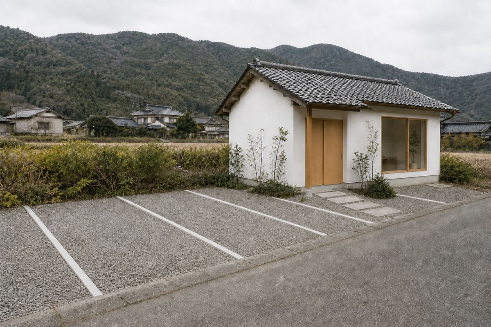
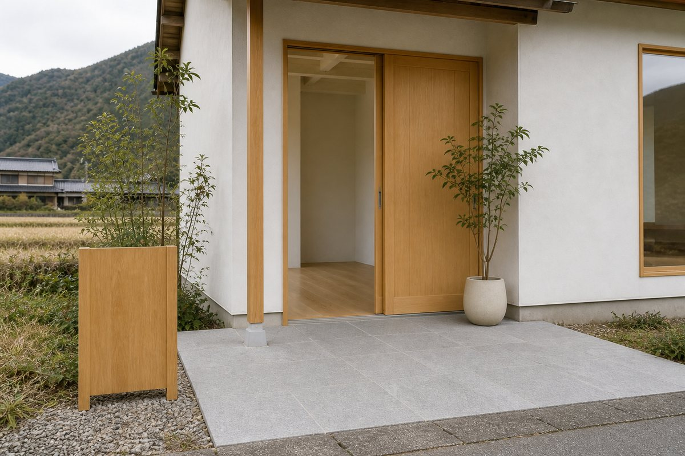

お席をご用意してお待ちしております
ネットで24時間ご予約いただけます。はじめての方も、髪のお悩みだけのご相談も歓迎します。
メニュー・料金を見る ❯
※このサンプルの予約データは、毎晩0時に自動で消去されます。
お電話かLINE、どちらか使いやすいほうでどうぞ。
受付時間: 9:00〜18:00（最終受付 17:00）（毎週月曜・第2火曜を除く）
ここまではお客様が見る画面です。上の予約フォームから入った予約が、お店の人にはどう見えるのか。実際の管理画面をご覧いただけます。予約の確認、お客様への電話、取り消し、臨時休業の設定まで、すべてスマホのブラウザだけで行えます。
パスワード demo1234

お店の敷地に停められます。前の道は細いので、対向車にお気をつけてお越しください。JR川棚温泉駅から車で5分です。

車椅子や杖の方も、そのままお入りいただけます。お手伝いが必要なときは、ご予約のときにお書き添えください。